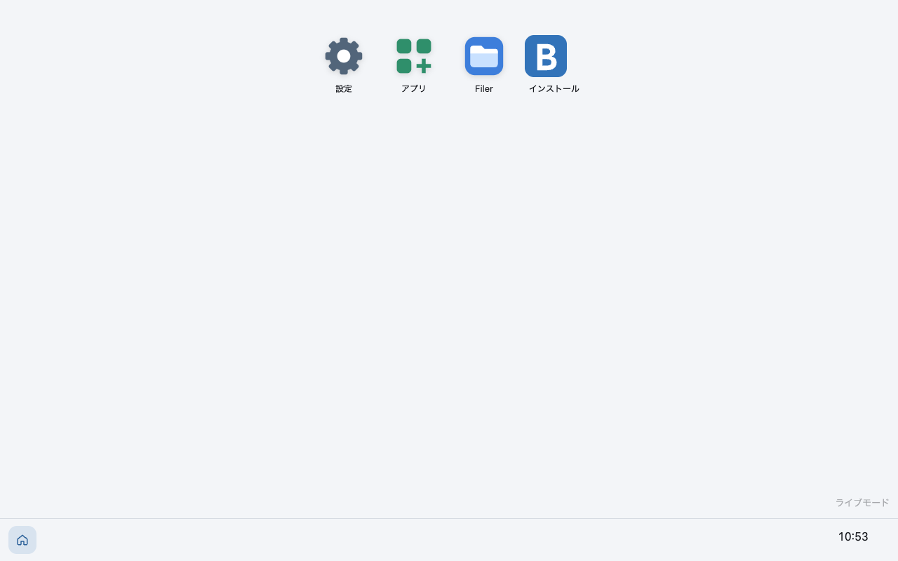

Binette
ブラウザだけで動く、スマホのような OS です。アプリを取ってきて、ブラウザの中でビルドして動かします。
{{version}}（設計中のため、仕様は変わることがあります）

ブラウザだけで動く
インストール不要。ホーム画面に追加すれば、アプリのように使えます。データはブラウザの中に保存します。
アプリは HTML ＋ AssemblyScript
アプリは Worker の中の WASM で動きます。UI は宣言的に書けます。
提供リストから入れる
URL の提供リストからアプリを入れて、更新できます。中身はハッシュで確かめます。